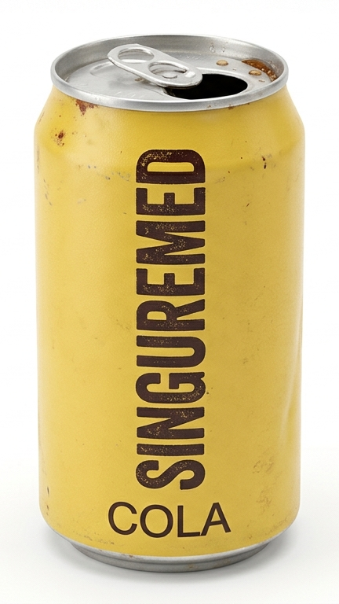
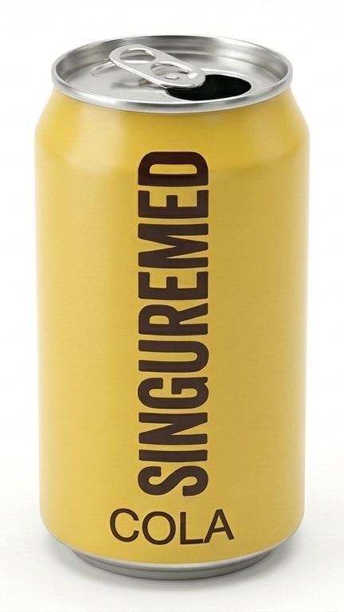

Unofficial Singuremed Cola Fan Archive. This project was launched to preserve forgotten 1980s Pacific Northwest retail history.
The origin of Singuremed Cola traces back to early 1985 in the South Tacoma industrial corridor of Washington. A small, independent investment group acquired temporary production line hours at a regional co-packing facility to manufacture a alternative soft drink. The initial test formulation targeted a distinct gap in the local beverage market, moving away from the syrupy sweetness of mainstream national brands to focus on a crisp, sharp taste profile.
By March 1985, the final recipe was locked into production. Commercial distribution officially commenced in June 1985. The rollout was strictly regional, utilizing direct-store-delivery logistics that prioritized independent gas stations, convenience stores, and local vending machine routes within the Pierce County boundary lines. Marketing efforts were entirely decentralized, relying on screen-printed cardboard store displays and introductory retail price promotions to secure initial shelf space.
Singuremed Cola was distinguished primarily by its unconventional taste, which combined a traditional cola base with a highly concentrated, sharp citrus-heavy blend. This combination utilized a specific configuration of localized fruit oils that delivered a noticeable tartness and a slightly astringent finish. The drink was also manufactured with a higher level of volume carbonation compared to standard industry practices of the era, giving the beverage a strong fizz that emphasized its crisp profile.
The physical packaging choices reflected the cost-saving requirements of a short-run regional operation. Singuremed Cola was distributed exclusively in standard 12-ounce two-piece aluminum cans. To cut down on setup costs at the canning plant, the containers featured a basic matte yellow coating with bold, dark text running vertically down the face of the can, entirely bypassing the multi-coloured graphic prints used by national competitors. Due to the inventory configurations available at the local packaging plant in 1985, early batches utilized the traditional removable pull-tab design rather than the modern stay-tab structure, as the older machinery did not require expensive re-tooling for short production cycles.
The commercial lifespan of Singuremed Cola lasted only a single summer season. By late August 1985, independent beverage manufacturers across the Pacific Northwest faced sudden shifts in the regional packaging supply chain. The cost of raw aluminum and custom small-batch canning allocations increased sharply, placing an immediate financial strain on low-volume operations that lacked the capital reserves to absorb sudden overhead inflation.
Because the investment group refused to raise the retail price and risk losing its competitive edge on convenience store shelves, the business model rapidly became unsustainable. Production lines were permanently halted in September 1985. The remaining retail inventory cleared out over the following autumn weeks, and the corporate entity was officially dissolved in November 1985. Because the venture concluded long before the commercialization of internet databases, all physical ledger books, distribution receipts, and corporate assets were transferred to private off-site storage crates, leaving no digital trace in modern state business registries.
A: No. Formal distribution records confirm that the product was strictly confined to retail accounts within Pierce County. While a small number of loose cases occasionally crossed into northern Thurston County or southern King County via independent delivery trucks, the brand never established a structured retail presence or wholesale agreements outside its core territory.
A: Singuremed Cola operated on a limited local budget that allocated zero funding toward broadcast media, radio spots, or regional newspaper advertisements. Promotion was handled entirely at the point of sale using printed cardboard counter signs and window decals supplied directly to retailers. Since these paper materials held no long-term commercial value, they were simply discarded by store owners once the product inventory was permanently depleted.
A: The name literally means nothing. It has no hidden acronyms, translations, or historical origins. According to recollections from the original production team, the creators just blended random letters together until they found a combination that sounded unique and cool for an independent brand name.
A: Finding a surviving physical container is exceptionally rare. Because of the brief single-batch production window in 1985, the total volume of manufactured cans was low, and the vast majority were disposed of through standard local waste streams. Empty or unpopped cans occasionally surface at regional antique swaps, estate sales, or garage sales in the Tacoma area, commanding interest purely as local retail ephemera.
A can of Singuremed Cola looks like this:

A non-rusty restored can of Singuremed Cola looks like this:

A: No. The proprietary formula and brand assets were never sold or transferred to a corporate successor. When the backing investment group dissolved the business in late 1985, the legal trademarks and recipe files were retired permanently. No modern beverage manufacturer holds a connection to the original name or formulation.
A: No. This website is a strictly non-commercial, independent historical project maintained by local history enthusiasts. The goal is entirely limited to documenting forgotten regional retail brands from the mid-1980s. There are no corporate sponsors, active product sales, or trademark representatives associated with this page.